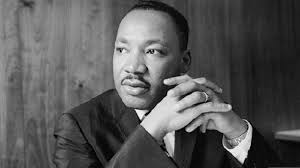
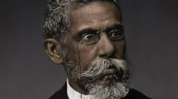
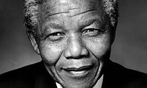
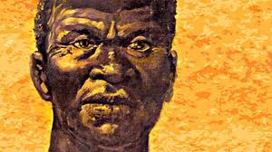

O Dia da Consciência Negra, celebrado em 20 de novembro, honra a luta, resistência e força do povo negro no Brasil. É um momento para refletir sobre a história, reconhecer injustiças e reforçar a importância do combate ao racismo.
Ser antirracista é agir, educar, respeitar e lutar todos os dias por um país mais justo, igualitário e humano. A diversidade é a força da nossa nação — e valorizá-la é construir um futuro melhor para todos.
Aqui são 4 homens negros importantes para a história

Martin Luther King Jr.
Foi um dos maiores líderes da luta pelos direitos civis nos Estados Unidos e uma das vozes mais poderosas contra o racismo no mundo. Defensor da igualdade, da justiça e da paz, acreditava que a transformação social deveria acontecer através da resistência não violenta e do amor ao próximo. Seu discurso mais famoso, "I Have a Dream", continua inspirando gerações ao reafirmar o sonho de um futuro em que todas as pessoas sejam tratadas com dignidade, sem distinção de cor. A trajetória de King é marcada por coragem, esperança e determinação, e seu legado permanece vivo como um chamado para que cada pessoa contribua ativamente para a construção de uma sociedade mais justa e humana.

Machado de Assis
Foi um dos maiores escritores da literatura brasileira e um dos mais importantes autores da língua portuguesa. Nascido no Rio de Janeiro em 1839, filho de uma lavadeira e de um pintor de paredes, Machado enfrentou desde cedo dificuldades sociais, raciais e econômicas, mas construiu uma trajetória extraordinária baseada em talento, sensibilidade e profunda capacidade de observação humana. Fundador da Academia Brasileira de Letras, escreveu romances, contos, crônicas e poesias que marcaram a cultura do país. Obras como "Dom Casmurro", "Memórias Póstumas de Brás Cubas" e "Quincas Borba" revelam sua escrita crítica, irônica e atemporal, refletindo sobre a sociedade brasileira, suas contradições e injustiças. Seu legado permanece vivo e influencia leitores e escritores até hoje.

Nelson Mandela
Foi um líder sul-africano que se tornou símbolo mundial da luta contra o apartheid e pela igualdade racial. Como ativista e posteriormente presidente da África do Sul, Mandela dedicou sua vida à promoção da reconciliação e justiça social. Sua mensagem de perdão e união após 27 anos de prisão inspirou milhões ao redor do mundo. Prêmio Nobel da Paz em 1993, seu legado transcende fronteiras, representando a resistência pacífica e a crença inabalável na dignidade humana, independentemente de raça ou origem.

Zumbi dos Palmares
Foi um dos maiores símbolos da resistência negra à escravidão no Brasil. Líder do Quilombo dos Palmares, o maior e mais duradouro quilombo da história brasileira, Zumbi lutou bravamente pela liberdade de seu povo contra as expedições portuguesas e holandesas. Sua morte em 20 de novembro de 1695 transformou-se em marco simbólico, sendo esta data escolhida para celebrar o Dia da Consciência Negra. Zumbi representa a luta pela liberdade, a resistência cultural e a defesa dos direitos do povo negro, inspirando gerações na busca por igualdade e justiça social.
Esse site foi criado por mim Alexandre, não duvide. Obrigado por ler meu site, e conhecer um poucou sobre o dia da consiencia negra e conhecer sobre alguns homens negros da historia tanto nacional do brasil quanto do nosso mundo, bjs